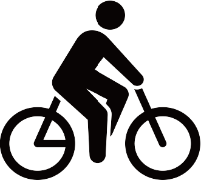

歩きスマホはどれぐらい危険？
How dangerous is walking with a smartphone
歩きスマホによる事故の数
下のグラフは平成29年から令和3年間での歩きスマホに関わる事故で救急搬送された人の数の推移です。減少傾向にはあるものの、歩きスマホによる事故は絶えず起きてしまっています。
実施:東京消防庁
総数:165人
集計対象:平成29年から令和3年間での歩きスマホに関わる事故での救急搬送人員
スマートフォンの普及により、歩きスマホが交通事故やけがの原因となっています。問題はこのリスクを過小評価していることです。このページでは、統計情報を通じて歩きスマホの危険性を解説します。
歩きスマホに対する人々の意識
Q.
あなたは生活の中でどれくらいの頻度で歩きスマホをしますか。
出典：交通事故弁護士相談広場
約
10
人に
2
人が
常習的に歩きスマホをしていると回答
300人中約半数の人が歩きスマホの頻度を「週に1回以下」と回答した一方、「1日に1〜10回以上」と回答した人は約42人でした。
半数近くの人が歩きスマホの危険性を理解し、歩きスマホをしないようにしているようです。その反面で歩きスマホをしている人はより頻繁に多くの回数をしていることがわかります。
実施：交通事故弁護士相談広場 編集部
調査対象・回答者数 [予備調査]全国の15～79歳以下の男女計3,000人
［本調査］徒歩移動時にスマホを利用した経験のある方 300人（男性 149人 女性 151人）
Q.
あなたは「歩きスマホ」についてどのように思いますか?
出典:MMD研究所
90%
以上の人が
歩きスマホは危険と回答
2019年から2022年までの推移を見ると、歩きスマホは危ないと考える人は毎年約90%以上である一方で「危ないとは思わない」・「なんとも思わない」人もいます。しかし多くの人が歩きスマホを危険だと認識しています。
実施:MMD研究所
有効回答・調査対象
有効回答:559人
調査対象:スマートフォンを所有する15歳~69歳の男女
◆ 歩きスマホで使用することが多いアプリとは
出典：交通事故弁護士相談広場
実施：交通事故弁護士相談広場 編集部
調査対象・回答者数 [予備調査]全国の15～79歳以下の男女計3,000人
［本調査］徒歩移動時にスマホを利用した経験のある方 300人（男性 149人 女性 151人）
歩きスマホと事故
◆ 救急搬送された被害者の事故発生時の行動
出典：東京消防庁
事故発生時に多くの人がスマートフォンを「画面を見ながら」移動していたことです。具体的には、64人で全体の約40%がこの状態でした。次に多かったのは「操作しながら」移動していた53人で、自転車に関しても同様の傾向が見られます。
152人
13人
◆ 事故種別ごとの救急搬送人員
◆ 初診時程度別救急搬送人員
出典：東京消防庁
実施:東京消防庁
総数:165人
集計対象:平成29年から令和3年間での歩きスマホに関わる事故での救急搬送人員
歩きスマホを減らすには？
歩きスマホは加害者にも被害者にもなりうる危険な行為です。軽率な歩きスマホが重大な事故につながり得ると言えます。自分だけは大丈夫と思わず日常生活で歩きスマホを避け、安全を意識しましょう。危険意識を持つことが事故を未然に防ぐことに繋がります。